Добро пожаловать в архив по "Black Lagoon"
Здесь будут краткие досье главных, и не только, женских персонажей, которые столкнулись с жестокостью этого мира и сбежали в Роанапаур, в город, где работорговля, убийства, наркотики и проституция воспринимаются как обычные потасовки или развлечение в ночном клубе.
Здесь нет идеальных, чистеньких, хорошеньких и добрых людей, в этом аду живут монстры, которые давно поехали крышей и им уже на всё плевать. Деньги и власть - это то, что делает тебя либо самым опасным, либо самым никчёмным в Роанапауре.
P.S. могут быть спойлеры, так что рекомендую ознакомиться с аниме и мангой перед тем как читать
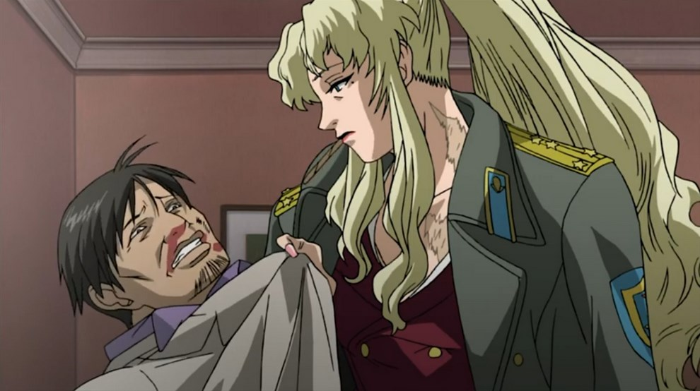
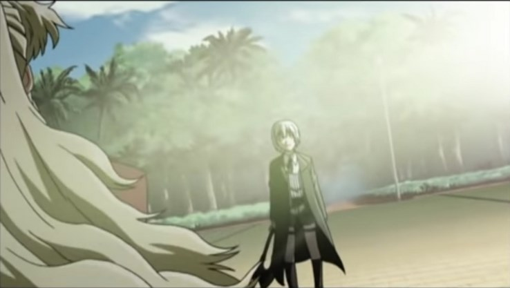
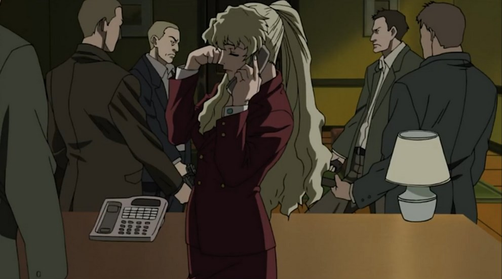
Бывший капитан ВДВ.
Прошла Афганскую войну, пережив чудовищные травмы, которые глубоко повлияли на её психику и внешность, однако свои шрамы она не скрывает, а носит их как медали за пройденные ужасы.
Она хладнокровная, имеет аналитический склад ума и воспринимает мирную жизнь скучной, она живёт войной и разрушениями.
Невероятно сильная, как физически(может одной рукой повалить взрослого мужчину), так и ментально(готова на убийство ребёнка, если он будет мешать её планам или будет устраивать слишком много шума).
Живёт кодексом чести, прекрасный лидер и стратег, не терпит предателей и тех, кто слишком заигрался в короля и уверовал в собственную безнаказанность.
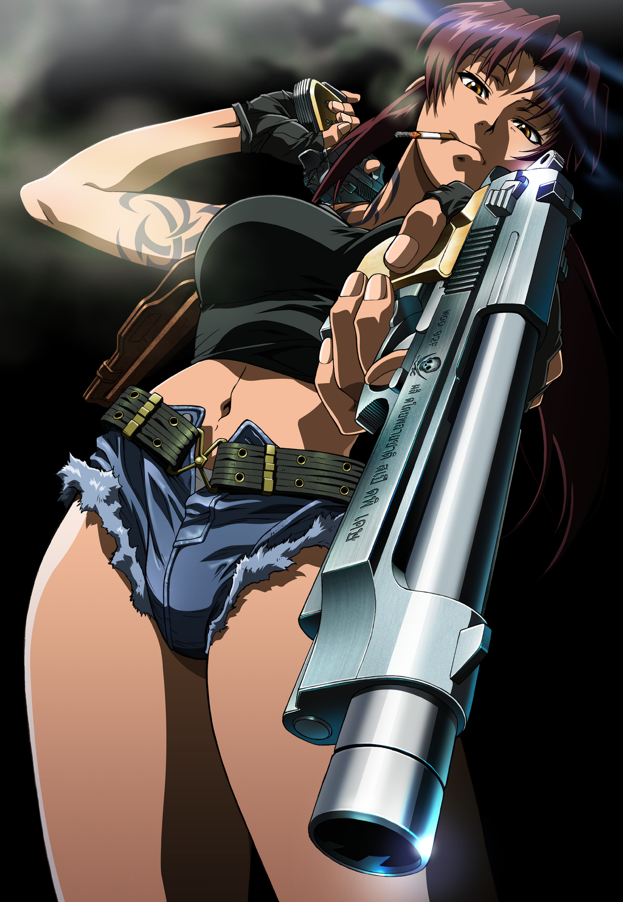
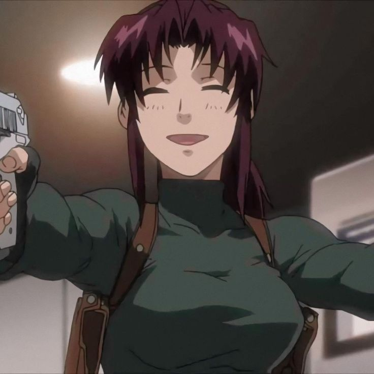
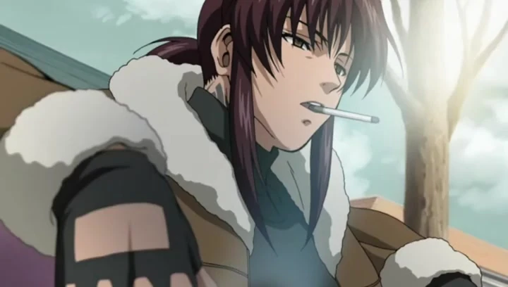
Американка китайского происхождения, провела свою жизнь в бедном районе Чайнатаун на Манхэттене, Нью-Йорк.
Подвергалась нападкам со стороны полиции за преступления, которые она не совершала.
Разговаривает на языке насилия и жестокости, она - сплошной комок ПТСР, пассивной и активной агрессии, и алкоголя как заглушение боли.
Живёт сегодняшним днём, у неё нет понятия будущего, ведь завтра может и не наступить, а прошлое она использует как нравоучение, что жизнь состоит не из розовых пони, а из боли и насилия, где каждый по своему плох.
Называют двурукой, потому что она умеет стрелять по-македонски из модифицированных пистолетов Beretta 92F.
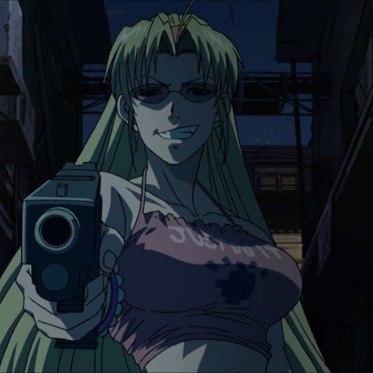
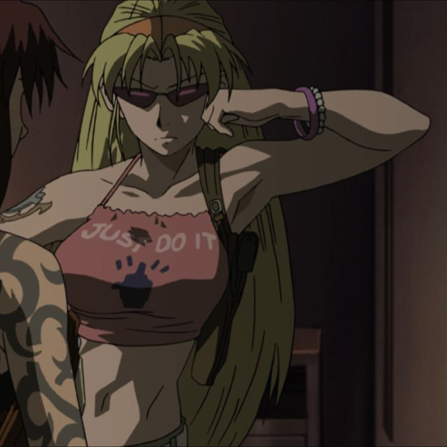
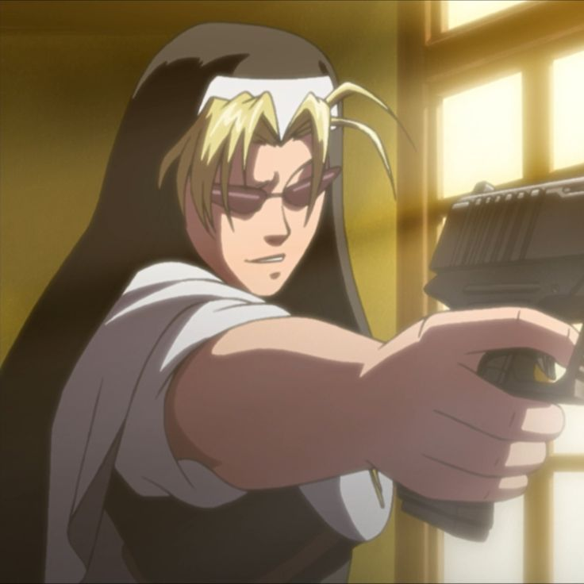
Агент ЦРУ под прикрытием, работает монахиней в Церкви Насилия, занимается контрабандой и имеет связи с подпольным миром.
Считается как подруга Реви, но может направить на неё пистолет, если это вопрос денег. Саркастичная и весёлая, имеет навыки шпионажа и высокий интеллект.
Эда - персонаж с двойным дном, хитрая и действует в интересах США
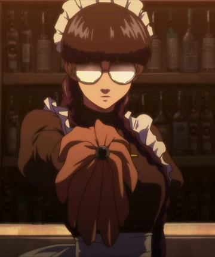
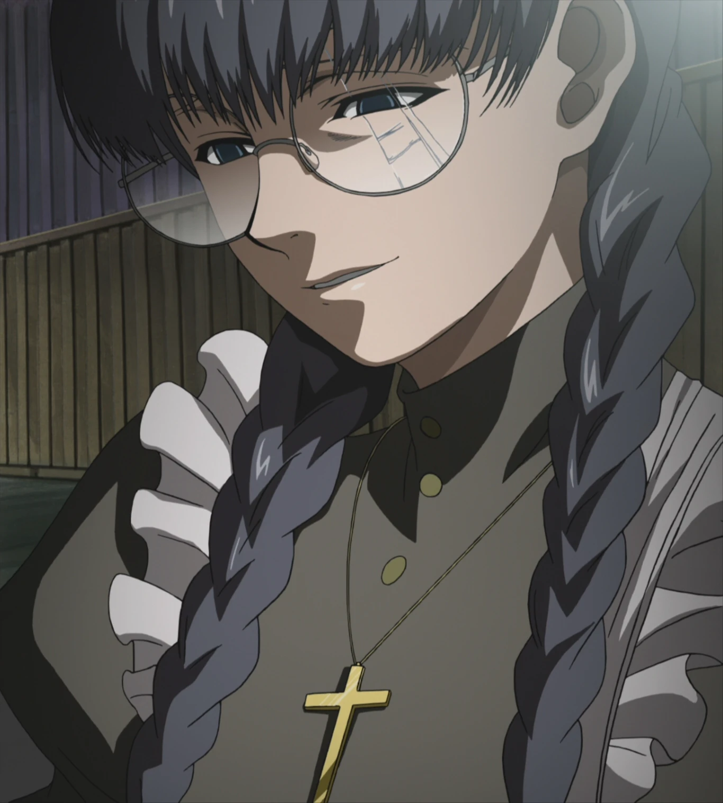
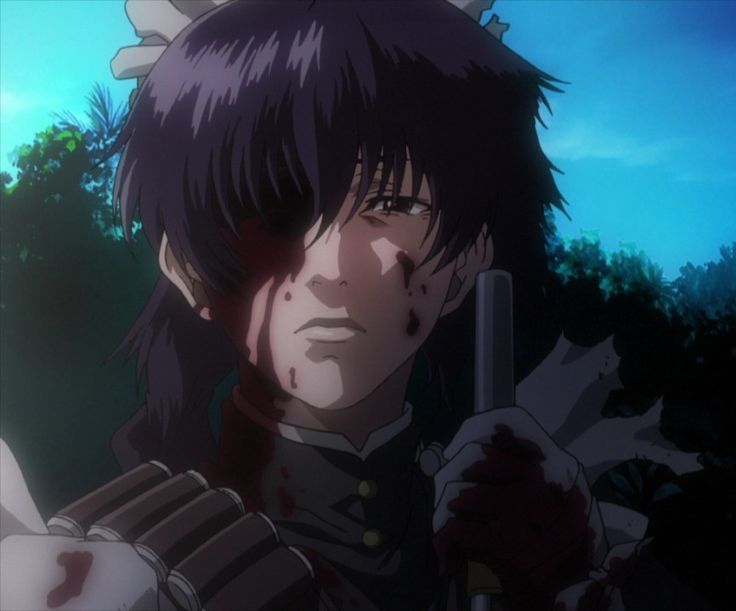
Одна из второстепенных персонажей. Бывшая террористка, ныне — горничная и телохранитель семьи Лавлейс.
Человек буквально неубиваемый, мастерски владеет многими видами огнестрельного и холодного оружия, также хороша в рукопашном бою.
Имеет ПТСР и жёсткое чувство долга перед своим маленьким господином и его семьёй, потому что искренне любит его.